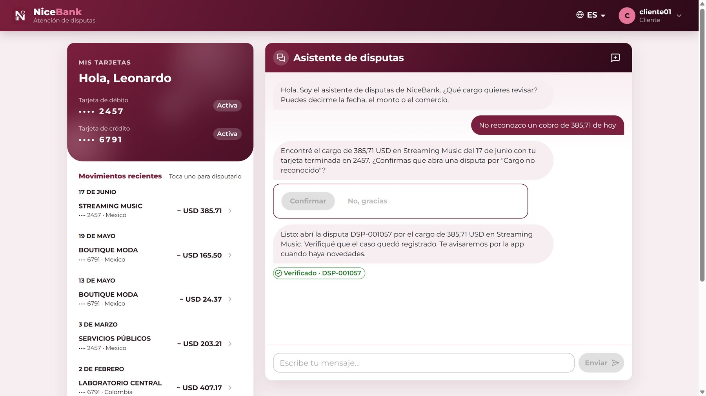
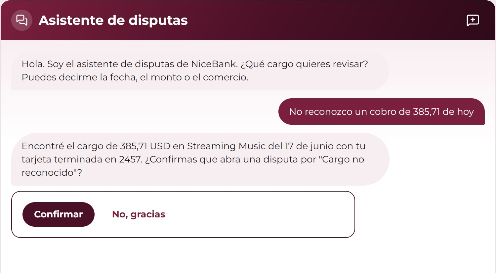
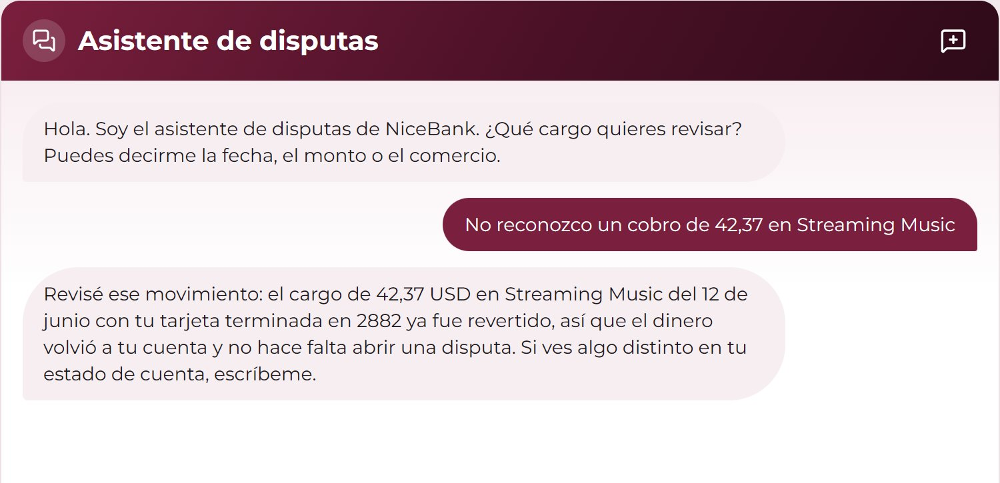
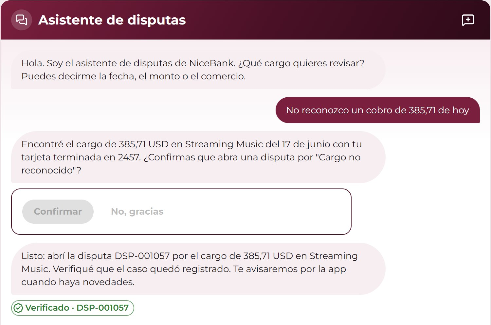
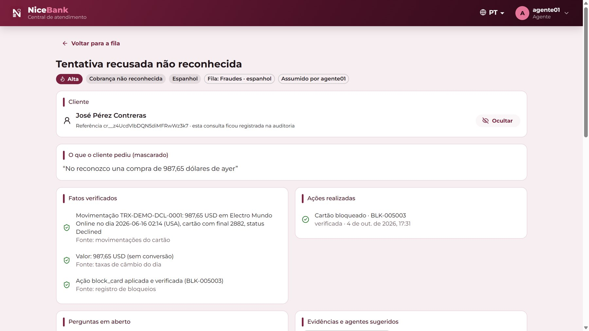

An AI-first assistant for card-dispute intake, in Spanish and Portuguese. It finds the exact charge, explains it or opens a verified dispute, and hands a complete case to a human when it should.


Searches only the customer's own cards. Shows the amount in their currency, in USD and the day's rate.

Reversed, pending or declined: it explains from the record instead of opening a case nobody needs.

Acts only after the customer confirms, then reads the case back before saying it's done. Card blocks need a second factor.

Verified facts, actions taken and open questions. The name stays encrypted until the case is claimed.
It understands and words; deterministic code decides with a policy the bank can read and audit.
Only two actions exist, each needs a confirmation; blocking a card also needs TOTP. Nothing is "done" until read back.
Opaque customer reference, RLS per customer, AES-GCM names revealed only to the claiming agent and audited.
Replies come from reviewed templates filled with verified data; the model sees masked text only.
Every turn traced, every decision tagged with its rule; a built-in baseline mode runs today's process on the same input.
Honest by design: our first case set was written by the same team that wrote the training phrases and overstated accuracy. We wrote and froze a second set afterwards, and that is the number we report.